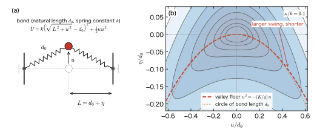

Appendix EWhich Diagram Gives Negative Thermal Expansion? — A Tension Model
In Chapter 14, we read thermal expansion as the “tail” of the tadpole diagram. The shift of the mean position becomes a static line (a line with Matsubara frequency $\omega_n=0$), which shifts the frequency through the vertex at its end—that was the reading. Then from which part of which diagram does a material that shrinks when heated (negative thermal expansion) come?
The answer is short. Thermal expansion itself is the “tail + vertex + ring” one-point diagram obtained by removing the external lines and the lower vertex from the tadpole, and whether the system expands or contracts is determined by the sign of that vertex. In this appendix, we confirm this one sentence with the smallest model that can be calculated by hand to the very end—two harmonic springs and one atom vibrating sideways between them. Although the springs are perfectly harmonic, cubic and quartic terms arise from geometry alone, and the model shrinks when heated.
In the second half, we use the same model to calculate “how the frequency of the shrinking mode moves with temperature” with the three diagrams of Chapter 14 (loop, tadpole, and bubble). Here we shall see that phrases such as “fixing the volume” and “stopping the strain” refer to different things on the diagrams. Every equation has been checked by exact diagonalization and numerical integration.
- That thermal expansion is the one-point diagram “tail (the inverse of the elastic constant) + vertex (the cubic force constant connecting the strain and the mode) + ring (the thermal fluctuations of the mode).” That negative thermal expansion occurs when modes whose vertex has the opposite sign dominate the sum
- That the stretching and shrinking of a single bond alone always gives expansion. That negative thermal expansion requires a degree of freedom perpendicular to the bond (transverse vibration) and the cubic term $\eta u^2$ connecting the strain $\eta$ and the transverse vibration $u$
- The tension model $U=k\bigl(\sqrt{L^2+u^2}-d_0\bigr)^2+\frac12\kappa u^2$. That $g\eta u^2$ and $\varphi u^4$ arise from geometry, and that $\varphi=g^2/2K$ makes the potential a perfect square
- The exact force balance $K\braket{\hat\eta}+g\braket{\hat u^2}=0$, the lowest-order diagram, the Mie–Grüneisen form, the exact solution in the classical limit, and the higher-order corrections of the geometric model
- The frequency shift of the shrinking mode: loop $+6$, tadpole $-2$, bubble $-4$ (in units of $(g^2/K)\braket{\hat u^2}_0/m$, adiabatic limit). The four meanings of “fixing” and the diagrams that enter each
- The correspondence in crystals: thermal expansion = the one-point diagram through strain, the quasiharmonic approximation = the tadpole through strain, constant volume = loop + bubble
E.1 Thermal Expansion Is a “One-Point Diagram”
E.1.1 Removing the external lines and the lower vertex from the tadpole
The tadpole of Section 14.6.2 of Chapter 14 (Figure 14.2(b)) consisted, from bottom to top, of “the vertex at which the external lines enter and leave,” “the tail,” “the upper vertex,” and “the ring at the head.” If we remove the external lines and the lower vertex, “tail + upper vertex + ring” remains. This is a diagram with only one external line (a one-point diagram), and it represents the mean position $\braket{\hat x}$ itself (the expression for the mean position in Section 14.6.2 of Chapter 14, $\braket{\hat x}=3\xi\braket{\hat x^2}_0/m\omega^2$; the last paragraph of the box in Section 14.8.2). The meanings of the three parts are as follows.
- Ring: the equal-time contraction $\braket{\hat A^2}_0=2n_B+1$ that returns to the same vertex. It is the size of the thermal and zero-point fluctuations of the mode. The temperature dependence enters only here.
- Vertex: the cubic force constant connecting “one mean position (strain)” and “two modes.” In crystals, it is $\partial\omega_q^2/\partial\eta=-2\gamma_q\omega_q^2$ (Section 14.11.2 of Chapter 14), which is proportional to the mode Grüneisen parameter $\gamma_q$. It expresses whether the mode becomes softer or harder when a strain is applied.
- Tail: the line with Matsubara frequency $\omega_n=0$. It is the static response to the mean force exerted by the vertex, and for a uniform strain it is the inverse of the elastic constant (the inverse of the bulk modulus times the volume, $1/B_0V_0$).
In words, “when a mode vibrates thermally (ring), the mode exerts a mean force on the strain (vertex). The lattice responds elastically to that force (tail).” This is thermal expansion. The tail is positive because it is the inverse of an elastic constant. The ring is also positive ($2n_B+1>0$). Therefore the sign of the mean strain is determined by the sign of the vertex alone.
E.1.2 Summing over all modes
In a crystal, we sum over the modes $q$ circulating in the ring. As we saw in the derivation of Section 14.11.2 of Chapter 14, the equilibrium condition at zero pressure gives
$$ \begin{equation} \eta_{\rm th}(T) = \frac{1}{B_0V_0}\sum_q\gamma_q\,\hbar\omega_q\left(n_q+\frac12\right), \qquad \alpha = \frac{\dd\eta_{\rm th}}{\dd T} = \frac{1}{B_0V_0}\sum_q\gamma_q\,c_{V,q} \label{eq:E-alpha} \end{equation} $$($\eta$ is the volume strain, $c_{V,q}$ is the heat capacity of mode $q$, and here $\gamma_q\equiv\gamma^{\rm h}_q$). Each term of Eq. \eqref{eq:E-alpha} is the one-point diagram of ring $q$: $\hbar\omega_q(n_q+\frac12)$ is the ring (the energy of the mode), $\gamma_q$ is the vertex, and $1/B_0V_0$ is the tail.
Since $c_{V,q}>0$ and $B_0V_0>0$, negative thermal expansion ($\alpha<0$) occurs only when the rings of modes with $\gamma_q<0$ dominate the sum. A mode with $\gamma_q<0$ is one whose “frequency rises when the volume is enlarged,” in other words, one that “becomes harder when pulled.” Since lower-frequency modes are excited first at low temperature ($c_{V,q}$ rises first), negative thermal expansion tends to appear at low temperature if the modes with $\gamma_q<0$ lie on the low-frequency side.
E.2 A Single Bond Alone Always Expands
What kind of vertex is needed to produce negative thermal expansion? First, let us confirm that the one-degree-of-freedom model of Chapter 14 cannot produce it.
Let $U(x)=\frac12m\omega^2x^2-\xi x^3+\varphi x^4$, where $x$ is the extension of a bond. The result of Section 14.6.2 (Section 14.8.2) of Chapter 14 was
$$ \begin{equation} \braket{\hat x} = \frac{3\xi\braket{\hat x^2}_0}{m\omega^2} \label{eq:E-1dof} \end{equation} $$Here the same coordinate $x$ serves both as the tail (the mean extension) and as the ring (the fluctuation $\braket{\hat x^2}_0$). Real bond potentials (of the Morse or Lennard-Jones type) are steep on the compressed side and gentle on the stretched side, so $\xi>0$. Equation \eqref{eq:E-1dof} is therefore positive: as long as a bond vibrates by its own stretching, its mean length always increases. Since the $x^4$ term does not enter the lowest-order $\braket{\hat x}$ (Section E.6), this conclusion does not depend on $\varphi$.
Negative thermal expansion requires a degree of freedom other than the direction of the bond. This is the transverse vibration $u$ of Figure E.1(b). The relevant cubic term is then not $x^3$ in the same coordinate but $\eta u^2$, which connects one strain $\eta$ and two transverse displacements $u$. What enters the ring is $u$ and what comes out in the tail is $\eta$, and the sign of the coefficient is determined not by an “asymmetry of the well” like $\xi$ but, as we shall see in the next section, by geometry.
E.3 The Tension Model — Harmonic Springs and Geometry
E.3.1 Setup
As in Figure E.2(a), suppose that an atom of mass $m$ is supported from both sides by two bonds of natural length $d_0$ and spring constant $k$. The atoms at the two ends are at a distance $L$ to the left and right of the rest position of the atom. The atom vibrates by $u$ in the direction perpendicular to the bonds. We write $L$ as
$$ L = d_0 + \eta $$and call $\eta$ the strain coordinate with the dimension of length. $\eta>0$ means that the ends move apart (extension), and $\eta<0$ that they approach each other (contraction). In what follows, we also give $\eta$ a mass $M$ and treat it as a dynamical variable (it plays the role of the uniform strain of a crystal or of the stretching of neighboring bonds). The bond-angle restoring force, which tries to keep the bond angle, is included as $\frac12\kappa u^2$. Since the length of each bond is $\sqrt{L^2+u^2}$, the potential energy is
Note that the bonds themselves are perfectly harmonic (the square of the extension). There is no asymmetry like $\xi$ anywhere.
E.3.2 Expansion
Derivation E.1: Expanding $U(\eta,u)$ in $\eta$ and $u$
Step 1: The bond length. We count $\eta$ and $u^2$ as small quantities of the same order ($\eta\sim u^2/d_0$; we shall see later that this is how the valley floor behaves). Applying $\sqrt{1+y}=1+\frac y2-\frac{y^2}{8}+\cdots$ to $s\equiv\sqrt{L^2+u^2}=L\sqrt{1+u^2/L^2}$, we get
$$ s = L + \frac{u^2}{2L} - \frac{u^4}{8L^3} + \cdots $$Step 2: Expanding $1/L$ in $\eta$. Since $\dfrac1L=\dfrac{1}{d_0(1+\eta/d_0)}=\dfrac{1}{d_0}\left(1-\dfrac{\eta}{d_0}+\cdots\right)$ and $\dfrac{1}{L^3}=\dfrac{1}{d_0^3}+\cdots$,
$$ \frac{u^2}{2L} = \frac{u^2}{2d_0} - \frac{\eta u^2}{2d_0^2} + \cdots, \qquad \frac{u^4}{8L^3} = \frac{u^4}{8d_0^3} + \cdots $$Step 3: The extension of the bond. Inserting $L=d_0+\eta$ and subtracting $d_0$ gives
$$ \begin{equation} \sqrt{L^2+u^2}-d_0 = \eta + \frac{u^2}{2d_0} - \frac{\eta u^2}{2d_0^2} - \frac{u^4}{8d_0^3} + \cdots \label{eq:E-stretch} \end{equation} $$The first and second terms are “first order in the small quantities” ($\eta$ and $u^2$), and the third and fourth terms are “second order” ($\eta u^2$ and $u^4$).
Step 4: Squaring. We square and keep terms up to “second order in the small quantities” ($\eta^2$, $\eta u^2$, $u^4$). Only the squares and the cross term of the two first-order terms contribute; the third and fourth terms of Step 3, multiplied by the first-order terms, become third order ($\eta^2u^2$, $\eta u^4$, $u^6$) and drop out:
$$ \left(\eta+\frac{u^2}{2d_0}\right)^2 = \eta^2 + \frac{\eta u^2}{d_0} + \frac{u^4}{4d_0^2} $$Step 5: Collecting terms. Multiplying by $k$ and adding $\frac12\kappa u^2$ gives
∎ We also checked by computer algebra that Eqs. \eqref{eq:E-stretch} and \eqref{eq:E-Uexp} are correct to this order.
Comparing Eq. \eqref{eq:E-Uexp} with the general two-degree-of-freedom form
we find
$$ \begin{equation} K = 2k,\qquad g = \frac{k}{d_0},\qquad \varphi = \frac{k}{4d_0^2},\qquad m\omega^2 = \kappa \label{eq:E-coef} \end{equation} $$Here $\omega$ is the harmonic frequency of the transverse vibration, and $\omega_\eta\equiv\sqrt{K/M}$ is the harmonic frequency of $\eta$. In what follows, we call Eq. \eqref{eq:E-Upoly} the polynomial model, and the treatment of Eq. \eqref{eq:E-Ugeom} with the square root kept the geometric model.
E.3.3 Cubic and quartic terms from geometry
Equation \eqref{eq:E-coef} contains three important points.
(1) Cubic and quartic terms arise even though the bonds are harmonic. $g\eta u^2$ and $\varphi u^4$ come not from the anharmonicity of the springs but from geometry alone: “the length of a spring pulled obliquely is $\sqrt{L^2+u^2}$.”
(2) $g>0$: pulling makes the transverse vibration harder. With $\eta$ held fixed, the curvature for the transverse vibration is $\partial^2U/\partial u^2|_{u=0}=m\omega^2+2g\eta$, so it becomes harder for $\eta>0$ (pulling). This is the same as a taut string giving a higher pitch when it is stretched more tightly, and we call it the tension effect.
(3) Perfect square. Since $g^2/2K=(k/d_0)^2/(2\cdot2k)=k/4d_0^2$,
$$ \begin{equation} \varphi = \frac{g^2}{2K} \label{eq:E-phi-g} \end{equation} $$holds. Then, since $\frac K2\left(\eta+\frac{g}{K}u^2\right)^2=\frac K2\eta^2+g\eta u^2+\frac{g^2}{2K}u^4$, Eq. \eqref{eq:E-Upoly} can be written
as a perfect square. The first term is nothing but the square of the first two terms of Eq. \eqref{eq:E-stretch}, that is, the square of “the extension of the bond.” The curve on which the first term vanishes,
$$ \begin{equation} u^2 = -\frac Kg\,\eta \qquad\left(\text{that is,}\ \eta=-\frac{u^2}{2d_0}\right) \label{eq:E-valley} \end{equation} $$is the valley floor of the potential. It is the curve along which “vibrating sideways without changing the bond length brings the two ends closer.” Indeed, keeping the bond length at $d_0$ gives $L^2+u^2=d_0^2$, that is, $L=\sqrt{d_0^2-u^2}\simeq d_0-u^2/2d_0$, which agrees with Eq. \eqref{eq:E-valley}. Motion along the valley floor costs only the energy $\frac12\kappa u^2$. If $\kappa$ is smaller than the spring constant $k$, the atom vibrates with a large amplitude along the valley floor, and $\eta$ is pulled toward the negative side accordingly.

E.3.4 The Grüneisen parameter
Let us express property (2) by a Grüneisen parameter. With $\eta$ held fixed, the frequency of the transverse vibration is $\omega_u^2(\eta)=\omega^2+2g\eta/m$. Defining the parameter by the logarithmic derivative with respect to the length $L$, and using $\dd\ln L=\dd\eta/d_0$ (around $\eta=0$), we have
$$ \begin{equation} \gamma_\epsilon \equiv -\frac{\partial\ln\omega_u}{\partial\ln L} = -\frac{d_0}{2\omega^2}\frac{\partial\omega_u^2}{\partial\eta} = -\frac{d_0}{2\omega^2}\cdot\frac{2g}{m} = -\frac{gd_0}{m\omega^2} = -\frac{k}{\kappa} < 0 \label{eq:E-gamma-eps} \end{equation} $$(with $gd_0=k$ and $m\omega^2=\kappa$). This is the Grüneisen parameter when we use the dimensionless strain $\epsilon\equiv\eta/d_0$, and if $\kappa\ll k$ it takes a large negative value. The softer the transverse vibration is compared with the bond stretching, the larger the negative Grüneisen parameter. In what follows, we also use the parameter for the strain $\eta$ with the dimension of length,
$$ \begin{equation} \gamma_u \equiv -\frac{\partial\ln\omega_u}{\partial\eta} = -\frac{g}{m\omega^2} \qquad\left(\gamma_\epsilon=d_0\gamma_u\right) \label{eq:E-gamma-u} \end{equation} $$(which has the dimension of inverse length).
E.4 Reading the Diagram of Thermal Expansion
E.4.1 Exact force balance
We take the Hamiltonian of the polynomial model \eqref{eq:E-Upoly} to be
$$ \Ham = \frac{\hat p_u^2}{2m} + \frac{\hat p_\eta^2}{2M} + U(\hat\eta,\hat u) $$In thermal equilibrium, $\braket{[\Ham,\hat O]}=\Tr\left(\ee^{-\beta\Ham}[\Ham,\hat O]\right)/Z=0$ for any operator $\hat O$ (since $\ee^{-\beta\Ham}$ commutes with $\Ham$, the cyclicity of the trace gives $\Tr(\ee^{-\beta\Ham}\Ham\hat O)=\Tr(\ee^{-\beta\Ham}\hat O\Ham)$). Taking $\hat O=\hat p_\eta$ and using $[\hat p_\eta,f(\hat\eta)]=-\ii\hbar f'(\hat\eta)$, we have $[\Ham,\hat p_\eta]=\ii\hbar\,\partial U/\partial\hat\eta$, and therefore
The term $\varphi u^4$ does not enter because it does not contain $\eta$. This is the condition “the mean force is zero,” and it holds exactly in quantum mechanics at any temperature (no perturbation theory has been used). If $g>0$, then $\braket{\hat\eta}=-(g/K)\braket{\hat u^2}<0$: as long as the atom vibrates sideways, the system is always contracted. In exact diagonalization as well, the left-hand side of Eq. \eqref{eq:E-force} was $10^{-13}$ or less relative to $g\braket{\hat u^2}$ (with the setup of Section E.5.6).
E.4.2 The lowest-order diagram
Replacing $\braket{\hat u^2}$ in Eq. \eqref{eq:E-force} by its lowest-order value $\braket{\hat u^2}_0=\ell_u^2(2n_B+1)$ ($\ell_u^2=\hbar/2m\omega$, $n_B=n_B(\omega)$) gives the lowest-order thermal expansion, but let us compute the same answer from the diagram. This makes the meaning of the parts of the diagram clear.
Derivation E.2: Computing $\braket{\hat\eta}$ from the one-point diagram
Step 1: Dimensionless operators. As in Chapter 14, we write $\hat u=\ell_u\hat A$ and $\hat\eta=\ell_\eta\hat B$, where $\hat A=\hat a+\hat a^\dagger$, $\hat B=\hat b+\hat b^\dagger$, and $\ell_\eta^2=\hbar/2M\omega_\eta$. The cubic term is
$$ \hat V = g\,\hat\eta\hat u^2 = \lambda\,\hat B\hat A^2, \qquad \lambda \equiv g\,\ell_\eta\ell_u^2 $$Step 2: First order in $\lambda$. As in the expansion formula of Section 14.5.1 of Chapter 14, we expand $\braket{\hat B}=\braket{T_\tau\hat B(0)\exp[-\frac1\hbar\int_0^{\beta\hbar}\dd\tau\,\hat V(\tau)]}_{0,{\rm c}}$ to first order:
$$ \braket{\hat B} = -\frac{\lambda}{\hbar}\int_0^{\beta\hbar}\!\dd\tau\,\braket{T_\tau\hat B(0)\hat B(\tau)\hat A^2(\tau)}_0 $$Step 3: Contractions. Since $\hat B$ pairs only with $\hat B$, $\hat B(0)$ and $\hat B(\tau)$ form a pair (1 way), and the two factors $\hat A(\tau)$ form an equal-time ring (1 way). The value of the line is $-\mathcal{D}_{\eta0}(0-\tau)$, and the value of the ring is $2n_B+1$ ($\mathcal{D}_{\eta0}$ is $\mathcal{D}_0$ with frequency $\omega_\eta$).
Step 4: The integral over the tail. From the special values of $\mathcal{D}_0$ in Section 14.4.2 of Chapter 14 (the static response), $\int_0^{\beta\hbar}\dd\tau\,\mathcal{D}_{\eta0}(\tau)=-2/\omega_\eta$. Because of the periodicity of $\mathcal{D}_{\eta0}$, the starting point does not matter, so
$$ \braket{\hat B} = -\frac{\lambda}{\hbar}\left(2n_B+1\right)\cdot\frac{2}{\omega_\eta} $$Step 5: Returning to length. Inserting $\lambda=g\ell_\eta\ell_u^2$ and $\ell_\eta^2=\hbar/2M\omega_\eta$ into $\braket{\hat\eta}=\ell_\eta\braket{\hat B}$ gives
$$ \braket{\hat\eta} = -\frac{2g\ell_\eta^2\ell_u^2}{\hbar\omega_\eta}\left(2n_B+1\right) = -\frac{2g}{\hbar\omega_\eta}\cdot\frac{\hbar}{2M\omega_\eta}\,\ell_u^2\left(2n_B+1\right) = -\frac{g}{M\omega_\eta^2}\,\ell_u^2\left(2n_B+1\right) $$Since $M\omega_\eta^2=K$,
∎ This agrees with Eq. \eqref{eq:E-force} with $\braket{\hat u^2}\to\braket{\hat u^2}_0$.
The parts of the diagram and the factors of Eq. \eqref{eq:E-eta-lo} correspond one to one as follows.
- Tail $=1/K$: the static response of $\eta$. The mass $M$ disappears in the form $\ell_\eta^2/\omega_\eta\propto1/M\omega_\eta^2$, and only the spring constant $K$ remains. The static response does not depend on inertia.
- Vertex $=g$: the force constant connecting two transverse displacements and one strain. It acts with a minus sign attached ($-g$).
- Ring $=\braket{\hat u^2}_0=\ell_u^2(2n_B+1)$: the fluctuation of the transverse vibration.
Since $g>0$, the system contracts. Moreover, even at $T=0$ the factor $2n_B+1=1$ remains, so the system is already contracted by the amount due to zero-point motion. Raising the temperature increases $n_B$, and the system contracts further.
E.4.3 The Mie–Grüneisen form
Derivation E.3: Rewriting Eq. \eqref{eq:E-eta-lo} in the Mie–Grüneisen form
Step 1: Writing $\ell_u^2$ in terms of energy. $\ell_u^2(2n_B+1)=\dfrac{\hbar}{2m\omega}\cdot2\left(n_B+\dfrac12\right)=\dfrac{1}{m\omega^2}\,\hbar\omega\left(n_B+\dfrac12\right)$.
Step 2: Substituting.
$$ \braket{\hat\eta} = -\frac gK\cdot\frac{1}{m\omega^2}\,\hbar\omega\left(n_B+\frac12\right) = \frac1K\left(-\frac{g}{m\omega^2}\right)\hbar\omega\left(n_B+\frac12\right) $$Step 3: Writing it with the Grüneisen parameter. The quantity in parentheses is $\gamma_u$ of Eq. \eqref{eq:E-gamma-u}, so
Step 4: Comparing with Chapter 14. Equation \eqref{eq:E-MG} is obtained from $\eta_{\rm th}=\frac{1}{B_0V_0}\sum_q\gamma^{\rm h}_q\hbar\omega_q(n_q+\frac12)$ of Section 14.11.2 of Chapter 14 by keeping a single mode and replacing $B_0V_0\to K$ (the second derivative with respect to the strain) and $\gamma^{\rm h}_q\to\gamma_u$. Indeed, in terms of the mass-weighted coordinate $Q=\sqrt m\,u$, the quadratic part of Eq. \eqref{eq:E-Upoly} together with $g\eta u^2$ can be written as
$$ \frac12m\omega^2u^2 + g\eta u^2 = \frac12\omega^2\left(1-2\gamma_u\eta\right)Q^2 $$which has the same form as $\frac12\omega_q^2(1-2\gamma^{\rm h}_q\eta)Q_qQ_{-q}$ of Chapter 14 (the only difference is whether $\eta$ is a volume strain or a length; $\gamma_u$ has the dimension of inverse length). ∎
In terms of the dimensionless strain $\epsilon=\eta/d_0$, with $\gamma_\epsilon=d_0\gamma_u=-k/\kappa$ and the elastic constant $Kd_0^2=2kd_0^2$, we have $\braket{\epsilon}=\frac{\gamma_\epsilon}{Kd_0^2}\hbar\omega(n_B+\frac12)$. Differentiating with respect to temperature gives the Grüneisen relation for a single mode, $\alpha_L=\dd\braket{\epsilon}/\dd T=\gamma_\epsilon c_V/Kd_0^2<0$. A single term of Eq. \eqref{eq:E-alpha} is, in this model, the one and only ring of the transverse vibration.
E.4.4 Exact solution in the classical limit (polynomial model)
Thanks to the perfect square \eqref{eq:E-square}, the polynomial model can be solved exactly in the classical limit.
Derivation E.4: Classical averages in the polynomial model with $\varphi=g^2/2K$
Step 1: The configuration integral. In classical statistics, the momentum integrals separate from the configuration integral, so averages can be computed with the configuration integral $Z_{\rm c}=\int\dd\eta\int\dd u\,\ee^{-\beta U(\eta,u)}$. Inserting Eq. \eqref{eq:E-square} gives
$$ Z_{\rm c} = \int_{-\infty}^{\infty}\!\dd u\int_{-\infty}^{\infty}\!\dd\eta\, \exp\!\left[-\frac{\beta K}{2}\left(\eta+\frac gKu^2\right)^2-\frac{\beta\kappa}{2}u^2\right] $$Step 2: Change of variables. Set $\eta'\equiv\eta+gu^2/K$. Since this merely translates $\eta$ with $u$ held fixed, the Jacobian is $\partial(\eta',u)/\partial(\eta,u)=1$, and the range of integration remains $(-\infty,\infty)$. Then
$$ Z_{\rm c} = \int\!\dd\eta'\,\ee^{-\beta K\eta'^2/2}\int\!\dd u\,\ee^{-\beta\kappa u^2/2} $$separates into the product of two independent Gaussian integrals.
Step 3: Averages. From the mean and variance of the Gaussian distributions, $\braket{\eta'}=0$ and $\braket{u^2}=k_BT/\kappa=k_BT/m\omega^2$. Since $\eta=\eta'-gu^2/K$,
∎ Both are exact to all orders in $g$.
The mean strain contracts exactly in proportion to temperature. Moreover, $\braket{u^2}$ keeps its harmonic-oscillator value even in the presence of $g$ and $\varphi$. This is because integrating over $\eta$ makes the distribution of $u$ exactly $\ee^{-\beta\kappa u^2/2}$, which is the mathematical expression of “motion along the valley floor costs only the energy $\frac12\kappa u^2$” (Section E.3.3). Numerical integration also confirms Eq. \eqref{eq:E-classical} to within the significant digits (the ○ in Figure E.3(a)).
In quantum mechanics, this exact solution does not hold. Even after the substitution $\eta'=\eta+g\hat u^2/K$, the kinetic energy $\hat p_u^2/2m$ mixes with $\hat p_\eta$ (because $\eta'$ also depends on $u$), and the two degrees of freedom do not separate. In the quantum case, only the relation \eqref{eq:E-force} is exact.
E.4.5 The geometric model — the next order
In Eq. \eqref{eq:E-Ugeom} with the square root kept, the terms $\eta^2u^2$, $\eta u^4$, and $u^6$ dropped in Eq. \eqref{eq:E-Uexp} come into play. At lowest order, $K\braket\eta+g\braket{u^2}\simeq0$ and $g/K=1/2d_0$ give $\braket{\eta}\simeq-\braket{u^2}/2d_0$. Let us obtain the next order in the classical limit.
Derivation E.5: $\braket{\eta}$ and $\braket{u^2}$ of the geometric model (classical limit, up to $T^2$)
Step 1: Taking the bond extension as a variable. If we use the bond extension $\rho\equiv\sqrt{L^2+u^2}-d_0$ and $u$ as variables, the potential
$$ U = k\rho^2 + \frac12\kappa u^2 $$separates. Writing $s\equiv d_0+\rho=\sqrt{L^2+u^2}$, we have $L=\sqrt{s^2-u^2}$ and $\eta=L-d_0$.
Step 2: The Jacobian. With $u$ held fixed, $\partial\rho/\partial\eta=\partial s/\partial L=L/s$, so $\dd\eta\,\dd u=(s/L)\,\dd\rho\,\dd u$. Hence
$$ \braket{F} = \frac{\int\dd\rho\,\dd u\;J\,F\,\ee^{-\beta(k\rho^2+\kappa u^2/2)}}{\int\dd\rho\,\dd u\;J\,\ee^{-\beta(k\rho^2+\kappa u^2/2)}}, \qquad J\equiv\frac sL = \left(1-\frac{u^2}{s^2}\right)^{-1/2} $$The exponential weight is an independent Gaussian distribution in $\rho$ and $u$, with variances $\sigma_\rho^2\equiv\braket{\rho^2}_{\rm G}=k_BT/2k$ and $\sigma^2\equiv\braket{u^2}_{\rm G}=k_BT/\kappa$ (the subscript G denotes the average over this Gaussian distribution). The restriction $L>0$ does not affect the expansion in powers of $T$.
Step 3: Expansion. We count $\rho$ and $u$ as quantities of order $\sqrt T$ and keep terms up to fourth order. Using $1/s=(1/d_0)(1-\rho/d_0+\rho^2/d_0^2-\cdots)$,
$$ \eta = s - \frac{u^2}{2s} - \frac{u^4}{8s^3} - d_0 = \rho - \frac{u^2}{2d_0} + \frac{\rho u^2}{2d_0^2} - \frac{\rho^2u^2}{2d_0^3} - \frac{u^4}{8d_0^3} + \cdots $$ $$ J = 1 + \frac{u^2}{2s^2} + \cdots = 1 + \frac{u^2}{2d_0^2} - \frac{\rho u^2}{d_0^3} + \cdots $$Step 4: The numerator. Among the terms of $J\eta$ up to fourth order, odd powers of $\rho$ vanish in the Gaussian average. What remains is
$$ J\eta \to -\frac{u^2}{2d_0} - \frac{u^4}{4d_0^3} - \frac{u^4}{8d_0^3} - \frac{\rho^2u^2}{2d_0^3} - \frac{\rho^2u^2}{d_0^3} $$(the second term is $(-u^2/2d_0)(u^2/2d_0^2)$, and the fifth term is $\rho\times(-\rho u^2/d_0^3)$). Using $\braket{u^4}_{\rm G}=3\sigma^4$ and $\braket{\rho^2u^2}_{\rm G}=\sigma_\rho^2\sigma^2$, we get
$$ \braket{J\eta}_{\rm G} = -\frac{\sigma^2}{2d_0} - \frac{9\sigma^4}{8d_0^3} - \frac{3\sigma_\rho^2\sigma^2}{2d_0^3} $$Step 5: Dividing by the denominator. Since $\braket{J}_{\rm G}=1+\sigma^2/2d_0^2+\cdots$, multiplying by $1/\braket{J}_{\rm G}=1-\sigma^2/2d_0^2$ and keeping terms up to $T^2$ adds $-\frac{\sigma^2}{2d_0}\times(-\frac{\sigma^2}{2d_0^2})=+\frac{\sigma^4}{4d_0^3}$:
$$ \braket{\eta} = -\frac{\sigma^2}{2d_0} - \frac78\frac{\sigma^4}{d_0^3} - \frac32\frac{\sigma_\rho^2\sigma^2}{d_0^3} $$Inserting $\sigma_\rho^2=k_BT/2k=(\kappa/2k)\sigma^2$ gives
Step 6: $\braket{u^2}$. Similarly, dividing $\braket{Ju^2}_{\rm G}=\sigma^2+\frac{3\sigma^4}{2d_0^2}$ by $\braket{J}_{\rm G}$ gives the second equation. ∎ We performed the same expansion by computer algebra and confirmed Eq. \eqref{eq:E-geom-T2}.
The first term is the lowest-order $-\braket{u^2}_0/2d_0$ (with $\braket{u^2}_0=\sigma^2$). The second term is negative, so the higher the temperature, the more strongly the system contracts compared with the straight line in temperature. There are two causes. One is that the valley floor bends downward faster than the parabola $-u^2/2d_0$ (the $-u^4/8d_0^3$ term in the expansion of $L=\sqrt{d_0^2-u^2}$). The other is a term in which the fluctuation $\sigma_\rho^2$ of the bond extension multiplies that of the transverse vibration; it is proportional to $\kappa/k$. In addition, $\braket{u^2}$ also becomes larger than the harmonic-oscillator value.
We compare with numerical integration ($k=d_0=1$, $\kappa/k=0.1$, $\tau\equiv k_BT/\kappa d_0^2=\sigma^2/d_0^2$).
- $\tau=0.01$: $\braket\eta=-5.0995\times10^{-3}$. The difference from the lowest-order value $-5.0\times10^{-3}$ is $-2.0\%$. Equation \eqref{eq:E-geom-T2} gives $-5.095\times10^{-3}$, and the remaining difference is due to the $T^3$ term.
- $\tau=0.05$: $\braket\eta=-2.8273\times10^{-2}$. The difference from the lowest-order value $-2.5\times10^{-2}$ is $-13.1\%$, and the difference from $-\braket{u^2}/2d_0$ evaluated with the numerical $\braket{u^2}$ at the same temperature is $-6.0\%$.
- Extrapolating $(\braket\eta+\sigma^2/2d_0)d_0^3/\sigma^4$ from the numerical values at small $\tau$ to $\tau\to0$ gives $-0.950$, in agreement with $-(7/8+3\kappa/4k)=-0.950$ of Eq. \eqref{eq:E-geom-T2}. The coefficient for $\braket{u^2}$ likewise comes out as $1.000$.
$\tau=0.05$ corresponds to the large amplitude $\sqrt{\braket{u^2}}\approx0.23d_0$, and only here does the result deviate from the lowest order by more than 10%. The weight of configurations with $L$ smaller than $0.2d_0$ (configurations in which the springs fold up) is only $6\times10^{-5}$ even at $\tau=0.05$.
![(a) Graph with kBT/κd0^2 on the horizontal axis and 100⟨η⟩/d0 on the vertical axis. The open circles of the polynomial model lie on the lowest-order straight line, and the red solid line of the geometric model bends below the line at higher temperature. The red dotted line is the expansion up to T^2. (b) Breakdown of the frequency shift ΔΩ^2, with ωη/ω (logarithmic) on the horizontal axis. The loop is a horizontal line at +6 and the tadpole one at -2, the bubble is a green curve approaching -4, and the sum of the three diagrams is a black curve approaching 0. The open circles and open squares are exact-diagonalization values.](figs/appE_figE-3.svg)
E.5 How Does the Frequency of the Same Mode Move? — Loop, Tadpole, and Bubble
How does the frequency of the mode that undergoes negative thermal expansion (here the transverse vibration $u$) move with temperature? The reasoning of the quasiharmonic approximation predicts that “when the lattice contracts, a mode that hardens when pulled becomes softer.” We calculate this with the rules of Chapter 14 and separate which diagram gives which contribution.
E.5.1 Vertices and the number of contractions
There are two anharmonic terms.
$$ \hat V_3 = g\,\hat\eta\hat u^2 = \lambda\,\hat B\hat A^2 \quad(\lambda=g\ell_\eta\ell_u^2), \qquad \hat V_4 = \varphi\,\hat u^4 = \varphi\ell_u^4\hat A^4 $$The first order of $\hat V_4$ gives exactly the same loop (12 ways) as in Section 14.5.2 of Chapter 14. What is new is the second order of $\hat V_3$. The external lines are $\hat A(\tau)$ and $\hat A(0)$, and each of the two vertices carries $\hat B\hat A^2$. There are six factors of $\hat A$ and two of $\hat B$. Since $\hat B$ pairs only with $\hat B$ ($\braket{\hat A\hat B}_0=0$), the two $\hat B$ always pair with each other.
Derivation E.6: Counting the contractions at second order in $\hat V_3$
The six factors of $\hat A$ can be paired in $5!!=15$ ways, and the $\hat B$ with each other in 1 way. We divide the cases according to where the external lines go.
(i) The external lines connect directly to each other: 3 ways. The remaining four $\hat A$ can be paired in $3!!=3$ ways, all of which are vacuum diagrams (removed by c).
(ii) The two external lines connect to the same vertex: 4 ways. Which vertex (2 ways). Assign $\hat A(\tau)$ and $\hat A(0)$ to the two $\hat A$ at that vertex (2 ways). $\hat B$–$\hat B$ in 1 way. The $\hat A\hat A$ at the opposite vertex forms an equal-time ring (1 way). $2\times2\times1\times1=4$. This is the tadpole. The tail is the $\eta$ line.
(iii) The two external lines connect to different vertices: 8 ways. The vertex that $\hat A(\tau)$ connects to (2 ways), which $\hat A$ at that vertex (2 ways), and which $\hat A$ at the other vertex $\hat A(0)$ connects to (2 ways). The remaining $\hat A$ pair (1 way) and the $\hat B$ pair (1 way) join the two vertices. $2\times2\times2=8$. This is the bubble, and the two internal lines are a $u$ line and an $\eta$ line.
Total. $3+4+8=15$. ∎ The 18 contractions “of the $\braket{\hat A}\braket{\hat A}$ type” that appeared for one degree of freedom in Chapter 14 (with the $\hat A^3$ vertex) do not appear here. This is because the $\hat A$ and the $\hat B$ remaining at a vertex that receives an external line cannot pair with each other.
The 4 and 8 ways are the numbers corresponding to the 36 tadpole contractions and the 36 bubble contractions for one degree of freedom. For one degree of freedom, the three legs of a vertex were all the same $\hat A$, so the numbers were larger by the number of ways of choosing the legs.
(a) loop (first order in $\varphi$, 12 ways)
(b) tadpole (second order in $g$, 4 ways)
(c) bubble (second order in $g$, 8 ways)
E.5.2 The three self-energies
We read off each $\Sigma$ with the rules of Chapter 14 (the Feynman rules of Section 14.5.4). We express the results as $\Delta\Omega^2=2\omega\Sigma'$ (the pole condition $\Omega^2=\omega^2+2\omega\Sigma'$ of Section 14.4.3 of Chapter 14). Here $\Omega^2$ is defined by the center of gravity of the multiplet of the fundamental (Section 14.10 of Chapter 14).
loop. Setting $x\to u$ in the loop expression $2\omega\Sigma_{\rm loop}=12\varphi\braket{\hat x^2}_0/m$ of Section 14.6.1 of Chapter 14 gives
$$ \begin{equation} \Delta\Omega^2_{\rm loop} = \frac{12\varphi\braket{\hat u^2}_0}{m} \label{eq:E-loop} \end{equation} $$Derivation E.7: The tadpole through strain
Step 1: The prefactor. The coefficient of the second-order term of the expansion is $\frac{1}{2!}(-\frac1\hbar)^2=\frac{1}{2\hbar^2}$; attaching the minus sign in the definition of $\mathcal{D}$ gives $-\frac{\lambda^2}{2\hbar^2}$.
Step 2: The value of the contractions. The 4 contractions of (ii) in Derivation E.6 all have the same value. When the external lines enter the vertex at $\tau_1$, there are three lines, $\mathcal{D}_{u0}(\tau-\tau_1)$, $\mathcal{D}_{u0}(\tau_1)$, and $\mathcal{D}_{\eta0}(\tau_1-\tau_2)$ (each with a sign $-1$), and the ring $2n_u+1$ is attached to the vertex at $\tau_2$ ($n_u\equiv n_B(\omega)$). The sign is $(-1)^3=-1$.
$$ \mathcal{D}^{(2)}_{\rm tad}(\tau) = -\frac{\lambda^2}{2\hbar^2}\cdot4\cdot(-1)\left(2n_u+1\right) \int\!\dd\tau_1\,\mathcal{D}_{u0}(\tau-\tau_1)\mathcal{D}_{u0}(\tau_1)\int\!\dd\tau_2\,\mathcal{D}_{\eta0}(\tau_1-\tau_2) $$Step 3: The integral over the tail. $\int_0^{\beta\hbar}\dd\tau_2\,\mathcal{D}_{\eta0}(\tau_1-\tau_2)=-2/\omega_\eta$. What remains has the form $\mathcal{D}_0\Sigma\mathcal{D}_0$, so
$$ \Sigma_{\rm tad} = \frac{2\lambda^2}{\hbar^2}\left(2n_u+1\right)\left(-\frac{2}{\omega_\eta}\right) = -\frac{4\lambda^2}{\hbar^2\omega_\eta}\left(2n_u+1\right) $$Step 4: Simplifying. Inserting $\lambda^2=g^2\ell_\eta^2\ell_u^4$, $\ell_\eta^2=\hbar/2M\omega_\eta$, and $\ell_u^2=\hbar/2m\omega$ gives
$$ \frac{4\lambda^2}{\hbar^2\omega_\eta} = \frac{4g^2}{\hbar^2\omega_\eta}\cdot\frac{\hbar}{2M\omega_\eta}\cdot\frac{\hbar}{2m\omega}\,\ell_u^2 = \frac{g^2\ell_u^2}{M\omega_\eta^2\,m\omega} = \frac{g^2\ell_u^2}{Km\omega} $$Therefore
∎ The last equality follows from Eq. \eqref{eq:E-eta-lo}.
The last form of Eq. \eqref{eq:E-tad} is the meaning of the tadpole. The mean strain $\braket{\hat\eta}$ (the upper half of the diagram, the one-point diagram of Figure E.1(b)) changes the curvature for the transverse vibration, $m\omega^2+2g\eta$, through the lower vertex. Since $\braket{\hat\eta}<0$ and $g>0$, the frequency goes down.
Derivation E.8: The bubble of $u$ and $\eta$
Step 1: Prefactor and contractions. In the 8 contractions of (iii) in Derivation E.6, there are four lines, $\mathcal{D}_{u0}(\tau-\tau_1)$, $\mathcal{D}_{u0}(\tau_1-\tau_2)$, $\mathcal{D}_{\eta0}(\tau_1-\tau_2)$, and $\mathcal{D}_{u0}(\tau_2)$, and the sign is $(-1)^4=+1$.
$$ \mathcal{D}^{(2)}_{\rm bub}(\tau) = -\frac{\lambda^2}{2\hbar^2}\cdot8\int\!\!\int\dd\tau_1\dd\tau_2\,\mathcal{D}_{u0}(\tau-\tau_1)\left[\mathcal{D}_{u0}\mathcal{D}_{\eta0}\right](\tau_1-\tau_2)\,\mathcal{D}_{u0}(\tau_2) $$Hence $\Sigma_{\rm bub}(\tau)=-\frac{4\lambda^2}{\hbar^2}\mathcal{D}_{u0}(\tau)\mathcal{D}_{\eta0}(\tau)$, and Fourier transforming gives $\Sigma_{\rm bub}(\ii\omega_n)=-\frac{4\lambda^2}{\hbar^2}P_{u\eta}(\ii\omega_n)$ with $P_{u\eta}\equiv\int_0^{\beta\hbar}\dd\tau\,\ee^{\ii\omega_n\tau}\mathcal{D}_{u0}(\tau)\mathcal{D}_{\eta0}(\tau)$.
Step 2: Expanding the product. For $0<\tau<\beta\hbar$, $\mathcal{D}_0(\tau)=-[(n+1)\ee^{-\omega\tau}+n\ee^{\omega\tau}]$ (Section 14.4.2 of Chapter 14), so writing $n_u$, $n_\eta\equiv n_B(\omega_\eta)$, and $W_\pm\equiv\omega_\eta\pm\omega$, we have
$$ \mathcal{D}_{u0}\mathcal{D}_{\eta0} = (n_u+1)(n_\eta+1)\ee^{-W_+\tau} + n_un_\eta\ee^{W_+\tau} + (n_u+1)n_\eta\ee^{W_-\tau} + n_u(n_\eta+1)\ee^{-W_-\tau} $$Step 3: Integrating each term. $\int_0^{\beta\hbar}\dd\tau\,\ee^{(\ii\omega_n-a)\tau}=(\ee^{-\beta\hbar a}-1)/(\ii\omega_n-a)$ (using the bosonic $\ee^{\ii\omega_n\beta\hbar}=1$). We simplify the numerators with $(n+1)\ee^{-\beta\hbar\omega}=n$.
- $a=W_+$: numerator $n_un_\eta-(n_u+1)(n_\eta+1)=-(1+n_u+n_\eta)$.
- $a=-W_+$: numerator $(n_u+1)(n_\eta+1)-n_un_\eta=1+n_u+n_\eta$.
- $a=-W_-$: numerator $n_u(n_\eta+1)-(n_u+1)n_\eta=n_u-n_\eta$.
- $a=W_-$: numerator $(n_u+1)n_\eta-n_u(n_\eta+1)=-(n_u-n_\eta)$.
Collecting the terms,
$$ P_{u\eta}(\ii\omega_n) = \left(1+n_u+n_\eta\right)\left[\frac{1}{\ii\omega_n+W_+}-\frac{1}{\ii\omega_n-W_+}\right] + \left(n_u-n_\eta\right)\left[\frac{1}{\ii\omega_n+W_-}-\frac{1}{\ii\omega_n-W_-}\right] $$This is the bracket of the crystal bubble expression of Section 14.11.1 of Chapter 14 with $\omega_1=\omega$ and $\omega_2=\omega_\eta$. Since the two modes are different ($\omega_\eta\neq\omega$), $W_-\neq0$, and no $\delta_{n,0}$ term like the one in the expression of Section 14.6.3 of Chapter 14 appears. The imaginary-time integral and the closed form agreed to within a relative difference of $5\times10^{-15}$ for $\beta\hbar\omega=0.5$, $2$, $\omega_\eta/\omega=3$, $10$, and $n=0,1,2$.
Step 4: Analytic continuation. We set $\ii\omega_n\to z$ and use $\frac{1}{z+W}-\frac{1}{z-W}=\frac{2W}{W^2-z^2}$. The prefactor is $\frac{4\lambda^2}{\hbar^2}=\frac{4g^2}{\hbar^2}\cdot\frac{\hbar}{2M\omega_\eta}\cdot\frac{\hbar^2}{4m^2\omega^2}=\frac{\hbar g^2}{2m^2\omega^2M\omega_\eta}$, so
Step 5: $z=\omega$. Writing $r\equiv\omega_\eta/\omega$, we have $W_\pm^2-\omega^2=\omega_\eta(\omega_\eta\pm2\omega)=\omega^2r(r\pm2)$ and $W_\pm=\omega(r\pm1)$, so
$$ \frac{2W_\pm}{W_\pm^2-\omega^2} = \frac{2}{\omega}\cdot\frac{r\pm1}{r(r\pm2)} $$The expression in the braces therefore becomes $\dfrac{2}{\omega r}B$ with $B\equiv(1+n_u+n_\eta)\dfrac{r+1}{r+2}+(n_u-n_\eta)\dfrac{r-1}{r-2}$. Forming $2\omega\Sigma_{\rm bub}$ and using $M\omega_\eta r=M\omega_\eta^2/\omega=K/\omega$, we get
$$ 2\omega\Sigma_{\rm bub}(\omega) = -2\omega\cdot\frac{\hbar g^2}{2m^2\omega^2M\omega_\eta}\cdot\frac{2}{\omega r}\,B = -\frac{2\hbar g^2}{m^2\omega K}\,B = -\frac{4g^2\ell_u^2}{mK}\,B $$∎ ($\ell_u^2=\hbar/2m\omega$).
In this way we obtain
We note three points.
- We assume $r>2$. At $r=2$, the denominator of the second term vanishes. At $\omega_\eta=2\omega$, the energy of one $\eta$ phonon equals that of two $u$ phonons (the $u$ at $z=\omega$ is degenerate with the intermediate state $\omega_\eta-\omega=\omega$), and this is a resonance at which second-order perturbation theory cannot be used.
- The imaginary part exists only at $z=\pm(\omega_\eta\pm\omega)$. The poles of Eq. \eqref{eq:E-bub} are at $z=\pm W_+$ and $\pm W_-$. For $r>2$, $W_->\omega$, so they give no width to the line at $z=\omega$ (the same situation as for the one-degree-of-freedom bubble of Section 14.6.3 of Chapter 14).
- Adiabatic limit. In the limit $r\to\infty$ (the bond stretching is much faster than the transverse vibration), $n_\eta\to0$ and $(r\pm1)/(r\pm2)\to1$, so $B\to(1+n_u)+n_u=2n_u+1$, and
follows.
E.5.3 The view of eliminating $\eta$
The value in the adiabatic limit can also be obtained by eliminating $\eta$. Since $\eta$ is fast, we assume that $\eta$ instantly follows $u$ at each moment and settles at $\partial U/\partial\eta=K\eta+gu^2=0$, that is, $\eta=-gu^2/K$. Inserting this into Eq. \eqref{eq:E-Upoly} gives
$$ U_{\rm eff}(u) = \frac12m\omega^2u^2 + \frac K2\cdot\frac{g^2u^4}{K^2} - \frac{g^2u^4}{K} + \varphi u^4 = \frac12m\omega^2u^2 + \left(\varphi-\frac{g^2}{2K}\right)u^4 $$Eliminating $\eta$ is the same as adding $-g^2/2K$ to the coefficient of $u^4$. Computing this $-(g^2/2K)u^4$ with the loop, that is, setting $\varphi\to-g^2/2K$ in Eq. \eqref{eq:E-loop}, gives $-6(g^2/K)\braket{\hat u^2}_0/m$. This is exactly equal to the sum of the tadpole's $-2$ and the adiabatic-limit bubble's $-4$. Of the 12 ways of the loop for the $-(g^2/2K)u^4$ term, 4 correspond to the tadpole and 8 to the bubble (the ratio $1:2$ of the 4 and 8 ways of Derivation E.6 becomes the ratio $-2:-4$). When the four-leg vertex is “untied” into two three-leg vertices joined by an $\eta$ line, it splits into the tadpole and the bubble according to how the two external lines are attached.
In the geometric model, $\varphi=g^2/2K$, so $U_{\rm eff}=\frac12m\omega^2u^2$, and in the adiabatic limit the transverse vibration is perfectly harmonic. This is because the energy of motion along the valley floor is only $\frac12\kappa u^2$.
E.5.4 Four meanings of “fixing”
From here on, we use $(g^2/K)\braket{\hat u^2}_0/m$ as the unit. In the geometric model with $\varphi=g^2/2K$, the values of the three diagrams are as given in Table E.1.
| Diagram | General expression | $T=0$ | Classical limit | Adiabatic limit $r\to\infty$ |
|---|---|---|---|---|
| loop | $12\varphi K/g^2=+6$ | $+6$ | $+6$ | $+6$ |
| tadpole (through strain) | $-2$ | $-2$ | $-2$ | $-2$ |
| bubble ($u$ + $\eta$) | $-4B/(2n_u+1)$ | $-4\dfrac{r+1}{r+2}$ | $-4-\dfrac{4}{r^2-4}$ | $-4$ |
The bubble in the classical limit is obtained by inserting $n_u\simeq k_BT/\hbar\omega\equiv t$ and $n_\eta\simeq t/r$ into $B$. Since $1+n_u+n_\eta\simeq t(r+1)/r$, $n_u-n_\eta\simeq t(r-1)/r$, and $2n_u+1\simeq2t$,
$$ \frac{B}{2n_u+1} \to \frac12\left[\frac{(r+1)^2}{r(r+2)}+\frac{(r-1)^2}{r(r-2)}\right] = \frac{(r+1)^2(r-2)+(r-1)^2(r+2)}{2r(r^2-4)} = \frac{(r^3-3r-2)+(r^3-3r+2)}{2r(r^2-4)} = \frac{r^2-3}{r^2-4} = 1+\frac{1}{r^2-4} $$At $T=0$, $n_u=n_\eta=0$, so $B=(r+1)/(r+2)$.
How these three are combined is determined by what is “fixed.” “Fixing” has at least four meanings, and different diagrams enter for each (Table E.2).
- Freezing the degree of freedom $\eta$ itself. $\eta$ is held at $0$ and removed from the dynamical variables. Since the term $g\eta u^2$ disappears, this is the same as $g=0$, and only $\varphi u^4$ remains. The loop alone gives $+6$.
- Keeping only the mean at $\braket{\hat\eta}=0$ with an external force. We apply an external force $-f\eta$ to $\eta$ and choose $f$ so that the mean strain vanishes ($f=g\braket{\hat u^2}$ from Eq. \eqref{eq:E-force}). $\eta$ keeps fluctuating around its mean. This is a constraint in the same sense as “$\braket{x}=0$” in Section 14.8.2 of Chapter 14, and it corresponds to measurements and calculations at fixed volume. Only the tadpole disappears, and loop + bubble remain. The result is $+2$ in the adiabatic limit and $2+4/(r+2)$ at $T=0$, that is, $+2.8$, $+2.333$, and $+2.125$ for $r=3$, $10$, and $30$.
- Only the mean strain follows, and the bubble is not included. This is the treatment that adds the loop to the quasiharmonic approximation. loop + tadpole gives $+4$. Since $K\braket{\hat\eta}=-g\braket{\hat u^2}$ is exact (Eq. \eqref{eq:E-force}), the mean curvature $$ \frac{\braket{U_{uu}}}{m} = \omega^2 + \frac{12\varphi\braket{\hat u^2}+2g\braket{\hat\eta}}{m} = \omega^2 + \left(12\varphi-\frac{2g^2}{K}\right)\frac{\braket{\hat u^2}}{m} $$ also holds exactly ($U_{uu}\equiv\partial^2U/\partial u^2=m\omega^2+2g\eta+12\varphi u^2$). In the language of the sum rules of Section 14.8 of Chapter 14, this is the mean (third moment) over all transitions in the spectrum of $u$, not the center of gravity of the fundamental line alone.
- Constraining nothing. This is the sum of the three diagrams. It gives $+4/(r+2)$ at $T=0$ ($0.8$ for $r=3$, $0.333$ for $r=10$, $0.125$ for $r=30$) and $-4/(r^2-4)$ in the classical limit. Only in the adiabatic limit does it become $0$ (consistent with the harmonic $U_{\rm eff}$ of Section E.5.3).
| Constraint | Diagrams included | Adiabatic limit | $T=0$ | Classical limit |
|---|---|---|---|---|
| 1. Freeze $\eta$ (same as $g=0$) | loop | $+6$ | $+6$ | $+6$ |
| 2. $\braket{\hat\eta}=0$ by an external force (constant volume) | loop + bubble | $+2$ | $2+\dfrac{4}{r+2}$ | $2-\dfrac{4}{r^2-4}$ |
| 3. Only the mean strain follows (quasiharmonic + loop) | loop + tadpole | $+4$ | $+4$ | $+4$ |
| 4. Unconstrained | loop + tadpole + bubble | $0$ | $\dfrac{4}{r+2}$ | $-\dfrac{4}{r^2-4}$ |
What the quasiharmonic approximation captures is only the tadpole's $-2$. The quasiharmonic approximation predicts that “in a contracted lattice, a mode that hardens when pulled becomes softer.” This is the second term $-\gamma_q\alpha\Omega_q$ of the decomposition of $\dd\Omega_q/\dd T$ in Section 14.11.3 of Chapter 14, in the case $\gamma_q<0$ and $\alpha<0$; the product is positive, so the second term is negative (softening). The actual sign, however, is determined by the competition with the loop ($+6$) and the bubble (around $-4$). In this model, the unconstrained sum is positive at $T=0$ and negative in the classical limit, and its magnitude is much smaller than the value of the tadpole alone.
E.5.5 The static bubble and the classical exact solution
Evaluating Eq. \eqref{eq:E-bub} at $z=0$ (Matsubara frequency $\omega_n=0$) gives the static bubble. In the classical limit, using $n_u+n_\eta+1\simeq(k_BT/\hbar\omega)(r+1)/r$, $n_u-n_\eta\simeq(k_BT/\hbar\omega)(r-1)/r$, and $2/W_\pm=2/\omega(r\pm1)$, the quantity in braces becomes
$$ \frac{k_BT}{\hbar\omega}\cdot\frac{r+1}{r}\cdot\frac{2}{\omega(r+1)} + \frac{k_BT}{\hbar\omega}\cdot\frac{r-1}{r}\cdot\frac{2}{\omega(r-1)} = \frac{4k_BT}{\hbar\omega^2r} $$and the factors $(r\pm1)$ cancel. With the same simplification as in Section E.5.2, $2\omega\Sigma_{\rm bub}(0)$ is $-4$ independent of $r$ in units of $(g^2/K)\braket{\hat u^2}_0/m$.
This is consistent with the classical exact solution. According to Eq. \eqref{eq:E-classical}, $\braket{u^2}=k_BT/m\omega^2$ is exact for $\varphi=g^2/2K$, and the static susceptibility $\beta\braket{u^2}=1/m\omega^2$ is not renormalized. The static $\Delta\Omega^2$ is the sum of the loop $+6$, the tadpole $-2$, and the static bubble $-4$, which is exactly $0$. The static curvature (the curvature of the free energy) is the same as in the adiabatic limit, independent of $r$. That $-4/(r^2-4)$ remains at the dynamical center of gravity ($z=\omega$) is a nonadiabatic correction, due to $\eta$ not being able to follow the oscillation of $u$ completely.
E.5.6 Comparison with exact diagonalization
We checked Eqs. \eqref{eq:E-loop}, \eqref{eq:E-tad}, and \eqref{eq:E-bub-shift} by exact diagonalization of the two-degree-of-freedom model. The setup is as follows.
- $\hbar=m=\omega=1$, $M/m=1$, $K=r^2$ ($\omega_\eta=r$), $r=3$, $10$, $30$, and $k_BT/\hbar\omega=0$, $0.5$, $1$, $2$.
- The polynomial model \eqref{eq:E-Upoly} is diagonalized in a product basis of harmonic-oscillator states of $u$ and $\eta$ (48 levels for $u$, and 16, 7, and 5 levels for $\eta$ depending on $r$).
- $\Omega^2$ is taken to be the average of $\omega_{ba}^2$ over the transitions of the $u$ spectrum in the window $0.5<\omega_{ba}<1.5$ (the multiplet of the fundamental), weighted by the weights $f_{ba}$ of the first sum rule (the center of gravity of Section 14.10 of Chapter 14). There are no lines near the edges of the window, and the weight inside the window is $0.999$ or more of the total.
- We compute $(\Omega^2-\omega^2)/[(g^2/K)\braket{\hat u^2}_0]$ for $g^2/K=(1,2,4,8)\times10^{-4}$ and extrapolate to $g\to0$ with a quadratic. $\varphi K/g^2$ is kept constant. “$\braket{\hat\eta}=0$” is realized by adjusting the external force $f$ numerically.
- The difference from calculations with larger bases (64 levels for $u$, and 22, 10, and 7 levels for $\eta$) is $3\times10^{-7}$ or less, and the difference from calculations with $M/m=10$ is about $10^{-8}$ (the expressions contain only $r$). The calculations were done on the CPU in double precision.
| Condition | $r=\omega_\eta/\omega$ | $k_BT/\hbar\omega$ | Expression | Exact diagonalization |
|---|---|---|---|---|
| Unconstrained, $\varphi=g^2/2K$ (sum of the three diagrams) | 3 | 0 | 0.8 | 0.8000000 |
| 3 | 1 | $-0.3746967$ | $-0.3746966$ | |
| 3 | 2 | $-0.6745403$ | $-0.6745400$ | |
| 10 | 0 | 0.3333333 | 0.3333333 | |
| 10 | 1 | 0.1092330 | 0.1092330 | |
| 10 | 2 | 0.0201006 | 0.0201009 | |
| 30 | 0 | 0.125 | 0.1250000 | |
| 30 | 1 | 0.0529621 | 0.0529621 | |
| $\braket{\hat\eta}=0$, $\varphi=g^2/2K$ (loop + bubble) | 3 | 0 | 2.8 | 2.8000000 |
| 3 | 1 | 1.6253033 | 1.6253033 | |
| 10 | 0 | 2.3333333 | 2.3333333 | |
| $\braket{\hat\eta}=0$, $\varphi=0$ (bubble only) | 3 | 0 | $-3.2$ | $-3.2000000$ |
| 10 | 0 | $-3.6666667$ | $-3.6666667$ | |
| 30 | 0 | $-3.875$ | $-3.8750000$ | |
| 3 | 1 | $-4.3746967$ | $-4.3746968$ | |
| Unconstrained, $\varphi=g^2/K$ | 3 | 0 | 6.8 | 6.8000000 |
| $g=0$ (loop only) | 3 | 0 | 6 | 6.0000000 |
| 3 | 2 | 6 | 5.9999945 |
Under all the conditions computed (three values of $r$; $\varphi K/g^2=\frac12,1,0$ and $g=0$; unconstrained and $\braket{\hat\eta}=0$; four temperatures), the absolute difference between the expressions and exact diagonalization is $1.3\times10^{-5}$ or less. The relative difference is $1.4\times10^{-5}$ for the two rows whose values are themselves small ($r=10$ and $30$, unconstrained, $\varphi=g^2/2K$, $k_BT/\hbar\omega=2$; values $0.0201$ and $0.0239$), and $2\times10^{-6}$ or less otherwise. The ○□ in Figure E.3(b) show this comparison graphically.
E.6 The Role of $x^4$
Only the cubic vertex enters the lowest-order thermal expansion. The vertex of the one-point diagram (Figure E.1) is a three-leg vertex where one tail line and two ring lines meet, and the quartic term $\varphi u^4$ does not enter directly. The absence of $\varphi$ from Eq. \eqref{eq:E-force} expresses the same fact.
The quartic term acts by changing the frequency of the mode in the ring. This is the diagram in which a loop is inserted into the line of the ring $\braket{\hat u^2}$ (a one-point diagram whose ring carries a four-leg vertex). It belongs to the same family as the diagrams in which “a bubble or a tadpole enters the ring at the head” in Section 14.9.5 of Chapter 14 (④⑤ of Figure 14.6), and corresponds to dressing the propagator of the ring at the head. If $\varphi>0$, the loop hardens the transverse vibration and reduces $\braket{u^2}$, so the contraction weakens.
In the geometric model, however, $\varphi=g^2/2K$, so in the classical limit $\braket{u^2}=k_BT/m\omega^2$ holds exactly (Eq. \eqref{eq:E-classical}). The loop correction entering the ring exactly cancels the corrections of the other diagrams entering the ring (the tadpole and the bubble). The sum of the static $\Delta\Omega^2$ in Section E.5.5, $+6-2-4=0$, is a manifestation of this (the ring fluctuation $\braket{u^2}=k_BT\times$ the static susceptibility is determined by the static self-energy).
If $\varphi\neq g^2/2K$, no cancellation occurs, and $\braket\eta$ deviates from the straight line in temperature. Examining $\varphi=g^2/K$ ($k=d_0=1$, $K=2$, $g=1$, $\kappa=0.1$) by numerical integration gives $\braket\eta=-4.088\times10^{-3}$ at $\tau=0.01$ and $-1.448\times10^{-2}$ at $\tau=0.05$, deviating strongly from the straight line $-\tau/2$ ($-5\times10^{-3}$, $-2.5\times10^{-2}$) (the coefficient of $u^4$ in $U_{\rm eff}$, $\varphi-g^2/2K=g^2/2K$, is positive, so the transverse vibration hardens and the contraction weakens). Even so, $K\braket\eta+g\braket{u^2}=0$ holds to the accuracy of the numerical integration (Eq. \eqref{eq:E-force} does not depend on $\varphi$).
When $\kappa$ is small (the transverse vibration is soft), the quartic term becomes dominant compared with $m\omega^2u^2$. If we let $\kappa\to0$ in a model with $\varphi\neq g^2/2K$, the transverse vibration becomes an almost purely quartic oscillator (Exercise 14.7 of Chapter 14), and perturbation theory around $\omega$ cannot be used. In that case, a treatment that sums the loop self-consistently (Chapter 15) is needed.
E.7 Correspondence with Crystals and Caveats
E.7.1 What survives in a crystal
In a crystal, the $\eta$ of the two-degree-of-freedom model plays two roles at once: the uniform strain (macroscopic volume change) and the finite-wave-vector phonons that involve bond stretching. Let us sort out, diagram by diagram, which of the two acts in a crystal.
- The tadpole through strain survives. The tail is a single uniform strain, and the ring at the head is the sum over all modes $q_1$. In a crystal of $N$ unit cells, the sum over the ring at the head is proportional to the number $N$ of unit cells (it adds $\gamma_{q_1}\omega_{q_1}^2$ over all modes), and it is multiplied by the factor of the tail, the inverse elastic constant $1/B_0V_0\propto1/N$, so that the whole remains finite (the expression for the tadpole through strain in Section 14.11.2 of Chapter 14).
- The bubble with the uniform strain in the intermediate state vanishes. The intermediate state is restricted to “one uniform strain + one phonon of the same mode $q$,” and there is no partner to sum over. The square of the vertex, $\propto\gamma_q^2\omega_q^4$, is merely multiplied by the propagator of the uniform strain, $\propto1/B_0V_0\propto1/N$, so the diagram vanishes as $O(1/N)$.
- What corresponds to the bubble of the two-degree-of-freedom model ($-4$) is the bubble with finite-wave-vector phonons in the intermediate state. This is the diagram whose intermediate state contains an acoustic or optical mode $q_2$ involving bond stretching and the mode $q_1$ that undergoes negative thermal expansion (the crystal bubble expression of Section 14.11.1 of Chapter 14). This diagram remains finite through the sums over $q_1$ and $q_2$.
The correspondence in crystals is therefore as follows.
- Thermal expansion = the one-point diagram through strain (Eq. \eqref{eq:E-alpha}). Negative thermal expansion occurs when rings with $\gamma_q<0$ dominate the sum. For example, the rigid-unit rotational modes of materials with corner-sharing frameworks “harden when pulled” by the same geometry as the transverse vibration of Figure E.1(b).
- The frequency change seen in the quasiharmonic approximation = the tadpole through strain ($-\gamma_q\alpha\Omega_q$ of Chapter 14). For a mode undergoing negative thermal expansion ($\gamma_q<0$, $\alpha<0$), it predicts softening.
- The change at fixed volume = loop + bubble (the first term of the decomposition of $\dd\Omega_q/\dd T$ in Section 14.11.3 of Chapter 14). In this model, the loop hardens and the bubble softens, and in the adiabatic limit the net result was hardening ($+2$).
Which diagrams an actual calculation includes can be checked with Table 15.5 of Chapter 15. For example, a calculation that sums only the loop self-consistently at fixed volume is close to 1 of Table E.2, and only a calculation that includes the bubble comes close to 2. The quasiharmonic approximation is 3 of Table E.2 with the loop removed (the tadpole only).
E.7.2 What we have not checked with this model
- Quantum calculation of the geometric model. The model \eqref{eq:E-Ugeom} with the square root kept has been examined only by numerical integration in the classical limit. Quantum exact diagonalization was done only for the polynomial model \eqref{eq:E-Upoly}.
- The resonance region near $r=2$. For $\omega_\eta\approx2\omega$, second-order perturbation theory breaks down (Section E.5.2). We have not examined how the levels mix or how the frequency splits. Exact diagonalization was done only for $r=3,10,30$.
- Reading the bubble by sum rules. In Section 14.8.3 of Chapter 14, the one-degree-of-freedom bubble was read as “level repulsion with the overtone.” In this model, the difference between the exact third moment of item 3 in Section E.5.4 ($+4$) and the center of gravity of the fundamental (the unconstrained sum) corresponds to the bubble, and it should be readable as “level repulsion with the lines at $z=\omega_\eta\pm\omega$.” This decomposition, however, has not been checked numerically.
- Mechanisms other than lattice vibrations. Negative thermal expansion due to changes in the electronic state or to magnetism (the magnetovolume effect) is outside the scope of this appendix.
E.8 Summary
| Phenomenon | Diagram | Value in the tension model | Correspondence in crystals |
|---|---|---|---|
| Thermal expansion and negative thermal expansion themselves | The tail + vertex + ring one-point diagram (Figure E.1). The sign is determined by the vertex | $\braket{\hat\eta}=-(g/K)\braket{\hat u^2}_0<0$ (vertex $g>0$). Exactly $K\braket{\hat\eta}+g\braket{\hat u^2}=0$ | $\alpha=\frac{1}{B_0V_0}\sum_q\gamma_qc_{V,q}$. Negative when rings with $\gamma_q<0$ dominate |
| Origin of the negative Grüneisen parameter | The vertex $g\eta u^2$ | From geometry, $g=k/d_0>0$, $\gamma_\epsilon=-k/\kappa$ | Transverse and rotational modes (harden when pulled) |
| Frequency change in the quasiharmonic approximation | tadpole through strain | $-2$ (softening) | $-\gamma_q\alpha\Omega_q$. Softening for modes with negative thermal expansion |
| Frequency change at fixed volume | loop + bubble | $+6-4=+2$ (adiabatic limit, hardening) | The bubble with finite-wave-vector phonons in the intermediate state, and the loop |
| Unconstrained frequency change | loop + tadpole + bubble | $0$ in the adiabatic limit. $4/(r+2)$ at $T=0$, $-4/(r^2-4)$ in the classical limit | Competition among the three. The sign is not fixed in general |
| Mean curvature (all transitions) | loop + tadpole | $+4$ (exactly $\braket{U_{uu}}/m$) | The sum rules of Section 14.8 of Chapter 14 |
| Role of the quartic term | Dressing the ring (a loop in the ring) | For $\varphi=g^2/2K$, cancels the other diagrams classically | Dominant for soft modes. Self-consistent treatment (Chapter 15) |
| Elimination of $\eta$ | Untying a four-leg vertex into two three-leg vertices | $U_{\rm eff}=\frac12m\omega^2u^2+(\varphi-g^2/2K)u^4$ | Effective model with the fast degree of freedom eliminated |
- One-point diagram. Thermal expansion is “tail (the inverse of the elastic constant) + vertex (the cubic force constant proportional to the Grüneisen parameter) + ring (the thermal fluctuations),” obtained by removing the external lines and the lower vertex from the tadpole. The ring and the tail are positive, so the only thing that separates expansion from contraction is the sign of the vertex.
- A single bond expands. With the $x^3$ vertex ($\xi>0$), always $\braket{\hat x}>0$. Negative thermal expansion requires a degree of freedom perpendicular to the bond and the $\eta u^2$ vertex.
- The tension model. From two harmonic springs, geometry alone yields $K=2k$, $g=k/d_0$, and $\varphi=k/4d_0^2=g^2/2K$, and the potential becomes the perfect square $\frac K2(\eta+gu^2/K)^2+\frac12\kappa u^2$. The valley floor is the curve along which “vibrating sideways while keeping the bond length brings the two ends closer.”
- Thermal expansion. $K\braket{\hat\eta}+g\braket{\hat u^2}=0$ is exact. The lowest order is $\braket{\hat\eta}=(\gamma_u/K)\hbar\omega(n_B+\frac12)$ (the Mie–Grüneisen form, $\gamma_u=-g/m\omega^2$), and the system is already contracted by the zero-point motion. In the classical limit, $\braket\eta=-gk_BT/Km\omega^2$ is exact for the polynomial model. The geometric model contracts more strongly than the straight line at higher temperatures.
- Frequency. loop $+6$, tadpole $-2$, bubble $-4B/(2n_u+1)$ ($-4$ in the adiabatic limit). Which diagrams enter depends on what is fixed. The quasiharmonic approximation captures only the tadpole, and the value at fixed volume is determined by loop + bubble. Everything agreed with exact diagonalization.
References
- A. L. Fetter and J. D. Walecka, Quantum Theory of Many-Particle Systems, McGraw-Hill, 1971; Japanese translation by Takeo Matsubara and Katsuhiko Fujii, Taryūshi-kei no Ryōshi-ron: Riron-hen [Quantum Theory of Many-Particle Systems: Theory Volume], McGraw-Hill (in Japanese). The reference for the Matsubara formalism and the notation of Feynman diagrams.
- A. A. Maradudin, A. E. Fein, "Scattering of neutrons by an anharmonic crystal", Phys. Rev. 128, 2589 (1962). The anharmonic self-energies of crystals (loop, tadpole, bubble).
- R. A. Cowley, "The lattice dynamics of an anharmonic crystal", Adv. Phys. 12, 421 (1963). Same as above; the relation between the tadpole and the thermal strain.
- D. C. Wallace, Thermodynamics of Crystals, Wiley (1972). The quasiharmonic approximation, the Grüneisen relation, and the Mie–Grüneisen equation of state.
- G. D. Barrera, J. A. O. Bruno, T. H. K. Barron, N. L. Allan, "Negative thermal expansion", J. Phys.: Condens. Matter 17, R217 (2005). A review of negative thermal expansion: the thermodynamics (the roles of thermal stress and elasticity), and vibrational and nonvibrational mechanisms on the atomic scale.
- M. T. Dove, H. Fang, "Negative thermal expansion and associated anomalous physical properties: review of the lattice dynamics theoretical foundation", Rep. Prog. Phys. 79, 066503 (2016). A review of the lattice-dynamical foundations of negative thermal expansion.